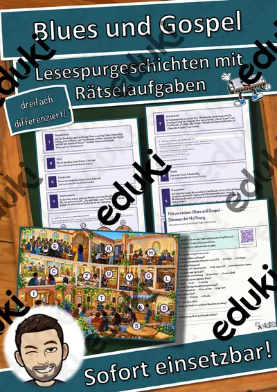

Lesespur: Rock ’n’ Roll und Rockmusik – Lesespurgeschichte mit Rätseln (Klasse 9)
Rock ’n’ Roll und Rockmusik – Lesespurgeschichte Musik (Klasse 9)Begib dich mit deiner Klasse auf eine spannende Lesespur durch die Geschichte der Rockmusik! Kofi und Ilvy besuchen mit ihrem Musikkurs ein Rockmuseum mit eigenem Proberaum: In der Jukeboxbar erfahren sie, wie der Rock ’n’ Roll in den 1950er-Jahren in den USA aus Rhythm & Blues und Country entstand, auf dem Tanzboden, warum Eltern die neue Jugendmusik so empörend fanden, an der Gitarrenwand lernen sie die typische Bandbesetzung kennen. Im Verstärkerraum hören sie den verzerrten Gitarrensound, am Schlagzeugpodest spüren sie den Backbeat, in der Songwerkstatt entdecken sie Riff, Strophe und Refrain, in der Stilgalerie die Entwicklung bis zu Punk und Deutschrock – und im Proberaum wird die Klasse selbst zur Band. Ihr Plektrum Plektri ist immer dabei. Am Ende jedes Abschnitts verrät ein Hinweis den nächsten Ort auf dem Museumsplan – nur wer genau liest, findet den Weg und sammelt alle geheimen Buchstaben zum Lösungswort.
Die perfekte Lesespur für den MUSIKUNTERRICHT der 9. Klasse – ideal als Einstieg in populäre Musik und Jugendkultur: Sie verbindet sinnentnehmendes Lesen mit Musikgeschichte, Fachbegriffen und der Frage, warum Musik für junge Menschen so wichtig ist. Das Material ist SOFORT EINSETZBAR und in DREI DIFFERENZIERUNGSSTUFEN (leicht ★ / mittel ★★ / schwer ★★★) angelegt.WICHTIG: Das komplette Material ist sowohl in FARBE als auch in SCHWARZ-WEISS enthalten – ideal zum Sparen von Druckkosten.DAS IST ENTHALTEN
- Lesespurgeschichte in 3 Niveaus (leicht, mittel, schwer)
- farbiger Museumsplan als Suchkarte
- Hörverstehen mit QR-Code zur MP3 (selbstständiges Hören mit Kopfhörern)
- vier Aufträge auf dem Weg: ein Quiz, eine Zuordnung, eine Rechenaufgabe und ein Steckbrief
- Rätselseite (Wörter-Suchsel + Fragen)
- Ausmalbild zum Thema (Schülerband auf der Bühne)
- ausführliches Lösungsblatt für die Lehrkraft
- alles zusätzlich als komplette Schwarz-Weiß-VarianteSO GEHT DIE LESESPURDie Jugendlichen lesen ab START, finden im Text den nächsten Ort, suchen ihn auf dem Museumsplan und lesen bei dieser Station weiter. An jeder richtigen Station gibt es einen Buchstaben. Eingebaute Sackgassen (Fanshop, Garderobe, Tourbus, Kasse) sind keine Stationen und dienen der Selbstkontrolle. Am Ende werden die gesammelten Buchstaben umgestellt und ergeben ein geheimes Lösungswort. (Die Lösungen sind selbstverständlich nur im Lösungsblatt für die Lehrkraft enthalten.)INHALTLICHER SCHWERPUNKTDie Jugendlichen lernen Entstehung und gesellschaftliche Bedeutung des Rock ’n’ Roll kennen, beschreiben Besetzung, Verstärker und Verzerrung, Backbeat, Riff und Songform, ordnen Stilentwicklungen wie Beat, Hard Rock, Punk und Deutschrock ein und erfahren, warum Gehörschutz bei lauter Musik wichtig ist.ABGEDECKTER LEHRPLAN (Klasse 9, Musik)
- Musik (LehrplanPLUS Bayern) – Jahrgangsstufe 9 „Populäre Musik – Rock“: Entstehung und Bedeutung des Rock kennen, Gestaltungsmittel beschreiben, Stile einordnen und einen einfachen Rocksong in der Gruppe gestalten.
- Deutsch – Lesen und mit Texten umgehen: Sachinformationen gezielt entnehmen und verknüpfen; Zuhören: einem Sachhörtext konzentriert folgen (Hörverstehen mit MP3).
- Mathematik – Multiplikation, Rechnen mit Takten.
- Fächerübergreifend / Kompetenzen: Geschichte (Nachkriegszeit, 1950er–1980er), Sozialkunde (Jugendkultur), Gesundheit (Gehörschutz), genaues Lesen und Prüfen, kreatives Gestalten (Ausmalbild).
Geeignet für Freiarbeit, Stationenlernen, Vertretungsstunden, Wochenplan, Projekttage und Distanzunterricht. Klassenstufe 9.
Ähnliche Materialien

Rockmusik Lückentext mit Wortspeicher Hörverstehen und Suchsel

Blues Lückentext mit Wortspeicher Hörverstehen und Suchsel

Marius Müller-Westernhagen Lückentext mit Wortspeicher Hörverstehen und Suchsel

Country-Musik Lückentext mit Wortspeicher Hörverstehen und Suchsel

Lesespur: Ballspiele: rollen, prellen, werfen, fangen – Lesespurgeschichte mit Rätseln (Klasse 1)

Lesespur: Inline-Skaten: sicher rollen, bremsen, fallen – Lesespurgeschichte mit Rätseln (Klasse 5)

Lesespur: Blues und Gospel: Stimmen der Hoffnung – Lesespurgeschichte mit Rätseln (Klasse 9)